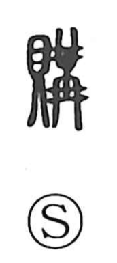

購

Uncategorized
Kun: aganau | On: kou
purchase ・ buy ・ barter
Explanation
A phono-semantic character formed with 貝 and 冓. 冓, serving as the phonetic, depicts strings of identical ornaments tied together above and below, expressing the act of binding two sides into one—an image also seen in words for marriage ceremonies such as 婚媾. 貝 is the cowry shell, prized in antiquity and used as money. Brought together, they portray the joining of buyer and seller—establishing the relationship of sale and purchase. While today it suggests buying with money, in early times this bond often arose through barter, exchanging goods to obtain what was needed.